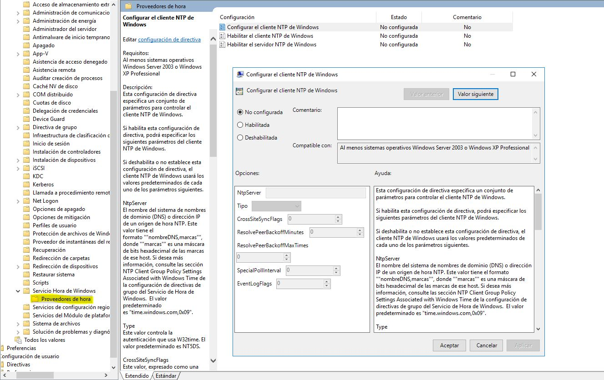
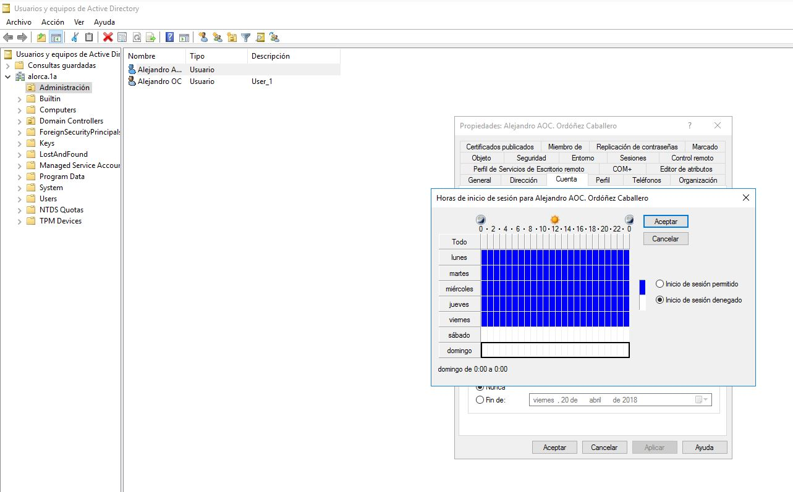
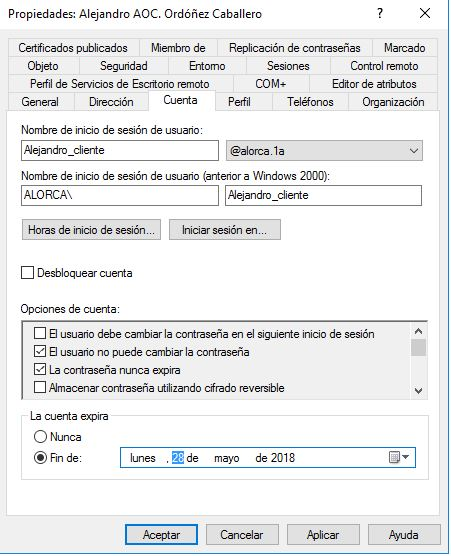

b.2) Bloqueos de acceso no autorizados al dominio
Existen diversas medidas de seguridad para el dominio, en este caso mostraremos las más usuales para que el usuario no tenga acceso al dominio.
La principal medida que se puede tomar es que un equipo no esté agregado al dominio, porque al no estar agregado, el inicio de sesión sería imposible, para asignar un horario para la conexión, nos dirigimos a Administración de directivas de grupo, una vez ahí desplegamos los Dominios y luego desplegamos nuestro dominio, como aparece en la foto.
Le hacemos click derecho en Default Domain Policy y le damos a Editar, se nos abrirá una nueva ventana, desplegamos en el siguiente orden, Directivas > Plantillas administrativas > Sistema > Servicio Hora de Windows y hacemos click en Proveedores de hora y abrimos Configurar el cliente NTP de Windows.
Habilitamos y en NtpServer ponemos nuestro dominio, una vez puesto aceptamos y abrimos Habilitar el cliente NTP de Windows, habilitamos nuevamente y aceptamos, a continuación nos dirigimos a Habilitar el servidor NTP de Windows, habilitamos y aceptamos. Una vez realizado todo lo anterior nos dirigimos al Active directory, una vez allí nos vamos a los usuarios los cuales queremos establecer un horario, para ello le hacemos click derecho en el usuario, nos vamos a propiedades y luego a la sección de cuenta y le hacemos click en Horas de inicio de sesión... y ahí le configuramos el horario.
También se puede poner una fecha de expiración de cuenta, para hacerlo debemos de ir a la sección cuenta y le establecemos una fecha.
